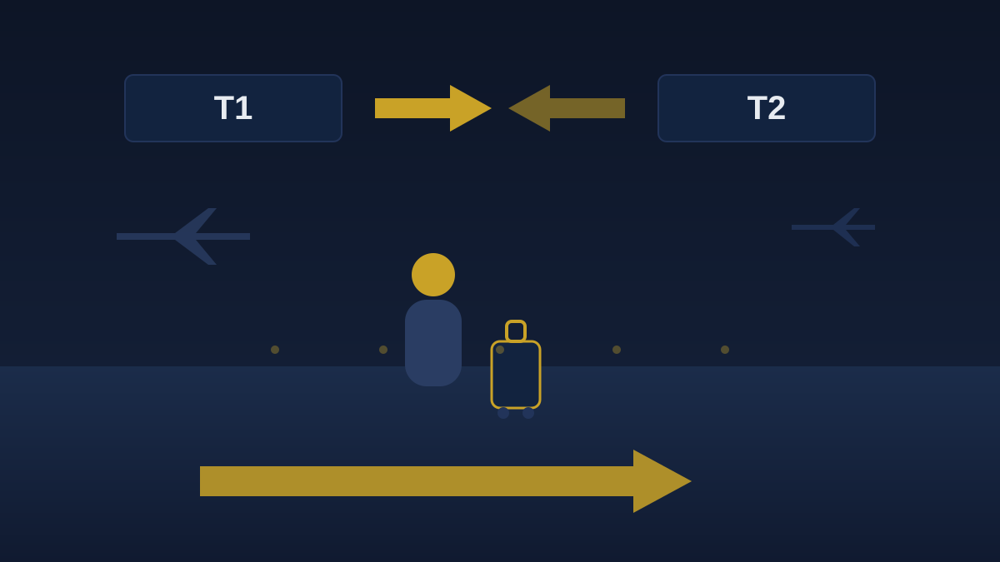

转机流程:国际转国内要做什么
- 办理入境 - 在落地的第一个机场(如SGN或HAN)走完整入境程序,和终点就是该城市的旅客排同一条队。
- 取行李、过海关 - 即使行李牌挂到最终目的地,国际转国内通常也要取出重新托运。
- 换航站楼 - 国际到达厅和国内出发厅是两栋楼(见下表)。
- 重新值机+安检 - 在国内航站楼柜台/自助机办登机牌、托运,再过安检到登机口。
航站楼距离
| 机场 | 航站楼 | 怎么走 |
|---|---|---|
| SGN - 新山一(胡志明) | 国际T2 ↔ 国内T1 | 相邻两栋楼,步行约5-10分钟 |
| HAN - 内排(河内) | 国际T2 ↔ 国内T1 | 摆渡车/打车约10-15分钟,是分开的两栋楼 |
真正吃掉时间的从来不是路程,而是两头的队:先排入境,再排国内值机和安检 - 两个队在高峰波次都可能很长。
诚实的最低转机时间
| 转机类型 | 自己走的最低时间 | 有转机陪同时 |
|---|---|---|
| 国际→国内,同一本票 | 3小时 | 约2-2.5小时可行 |
| 国际→国内,分开买票 | 3.5-4小时 | 约2.5-3小时 |
| 国内→国际 | 3小时 | 约2-2.5小时 |
分开买票风险更高 - 前一程延误没有航司保护,行李重新托运也全靠你自己。如果第一段晚点和第二段只差两小时,错过就是全额重买一张票。
转机陪同服务做什么
- 工作人员在入境处举牌接你,带你走优先入境通道,把最长的那队直接跳过。
- 陪同取行李,负责航站楼转换 - 不走错路、不用和黑车砍价。
- 在国内航站楼优先柜台重新值机,协助安检,把你送向登机口。
这项服务在SGN/HAN约1,650,000-1,850,000越南盾/人,按方向不同略有差异。最值的场景:转机不到3小时、傍晚高峰落地、分开买票的行程。更细的说明见运营方的紧衔接转机指南。
什么情况下不用买
- 同一本票、转机4小时以上 - 航司本来就在保护你的衔接。
- 只有手提行李、平峰中午到达 - 你要跳过的队伍本来就不长。
- 行李直挂最终目的地(部分联程票)能减少但仍不免除换航站楼这一步。
常见问题
国际转国内需要留多少时间?
同一本票至少3小时;分开买票3.5-4小时。你必须在第一个入境机场办入境、取行李、过海关,再到国内航站楼重新值机。
转机要取行李吗?
国际转国内要取 - 在第一个机场办完入境和海关后,把行李带到国内航站楼重新托运。
航站楼之间怎么走?
SGN:国际T2和国内T1相邻,步行约5-10分钟。HAN:T2到T1是另一栋楼,摆渡车/打车约10-15分钟。
转机陪同服务做什么?
工作人员在入境处举牌接你,走优先通道入境,陪同取行李和换航站楼,再到国内柜台优先值机、送到安检口。
先了解落地机场:看内排机场(HAN)攻略或新山一机场(SGN)攻略。
约15分钟机舱门到出口 - 运营方平均通关时间
≤2小时工作时间内预订确认
从$25起每人 - 按机场和套餐定价
中文服务中文工作人员可全程沟通
转机时间紧?预订转机陪同:
预订快速通关 - 实时价格SGN · HAN - 优先入境 + 航站楼转换 + 优先重新值机
预订后2个工作小时内人工确认,按你的航班安排工作人员。无需预付 - 见面当天付现金。